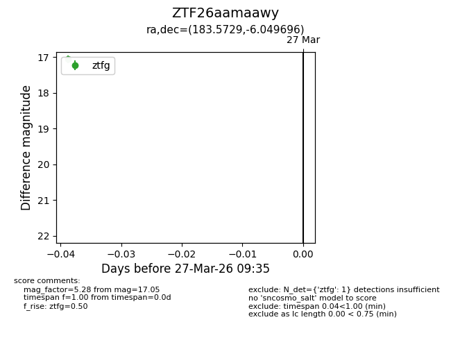
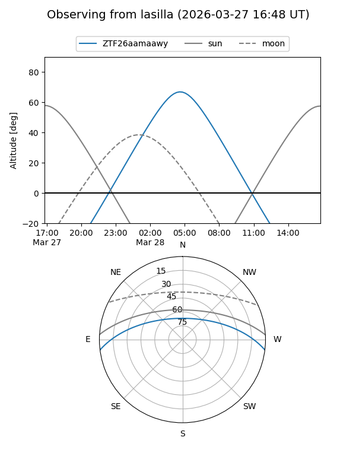
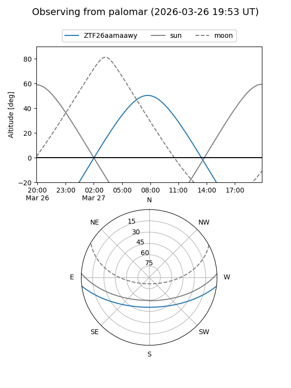

ZTF26aamaawy
Target ZTF26aamaawy at 2026-03-27 09:38
Aliases and brokers:
FINK: link
Lasair: link
ALeRCE: link
alt names
ZTF26aamaawy (ztf,fink_ztf)
Coordinates:
equatorial (ra, dec) = 183.5729,-6.04970
equatorial (HMS+DMS) = 12:14:17.49,-06:02:58.90
galactic (l, b) = (286.4188,+55.62656)
Flags:
Photometry:
last ztfg=17.05
1 ztfg detections
Lightcurve

Visibility


Additional plots